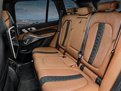

2021 BMW X7
The 2020 BMW X7 is the German automaker’s answer to the Land Rover Range Rover Sport and Mercedes-Benz GLS. Built at BMW’s Spartanburg, South Carolina, plant, the X7 joins the more than 400,000 other BMWs built in the U.S.A. This large, 3-row luxury SUV may be the biggest model in the lineup, but it still rides and handles like a BMW should.
Price R1 088 553,89


Overview
The 2021 BMW X7 is the brand's biggest people mover and brings an undeniably upscale aura and impressive levels of performance. Behind the three-row SUV's borderline-bloated kidney grille are three excellent turbocharged engine options. While the standard straight-six is perfectly adequate with its 335 horsepower, there's a lusty V-8 that makes either 523 or 612 horsepower. To get the highest-output engine requires ordering the Alpina XB7, which costs almost twice as much as the base model but delivers the excess expected by those who can afford it. Still, the beauty of the big BMW is that every one has a cushy and hushed cabin, as well as a plethora of luxury amenities and driver-assistance tech. Although its interior is smaller than its exterior suggests, and its power rear seats have sluggish operation, the 2021 X7 earns the highest marks among high-end SUVs and an Editors' Choice award.
What's new
For 2021, BMW reshuffles the X7 lineup by dropping the 456-hp, V-8-powered xDrive50i—the 523-hp M50i continues—and adding the 612-hp Alpina XB7. The latter is the first SUV that the BMW tuning specialist has offered in the U.S. The xDrive40i's powertrain gets a 48-volt starter-generator which, surprisingly, worsens its EPA fuel-economy figures; both its city and highway ratings drop by 1 mpg. The X7 also adds a handful of newly standard features, including long-overdue Android Auto compatibility. The previously available Off-Road package, which brought an electronic limited-slip rear differential and underbody protection, is no longer offered.
Engine, Transmission and Perfomance
The entry-level X7 xDrive40i is powered by a 335-hp turbocharged inline-six-cylinder, and the M50i has a twin-turbo 4.4-liter V-8 that makes 523 horses. The Alpina XB7 has a specially tuned version of that V-8, which develops 612 horsepower. All three engines pair with an eight-speed automatic and all-wheel drive. We found the six-cylinder model to be torquey and quiet, but the V-8 was more charming and its acceleration was more urgent. Its standard air suspension with adaptive damping provides a smooth ride, especially in Comfort mode. Unfortunately, the X7 has a tendency to lean in corners, which belies its otherwise athletic demeanor. The selectable Sport mode tightens things up slightly, with sharp impacts intruding on the interior's otherwise placid calm due to the narrow sidewalls on the 21-inch wheels. Those who want the mightiest X7, and can afford its steep asking price, will appreciate the Alpina XB7. The version BMW had us drive around a tight racetrack boasted astonishing acceleration and demonstrated surprising poise.
Fuel Economy and Real-World MPG
The EPA estimates the six-cylinder xDrive40i will earn up to 24 mpg on the highway and 19 mpg in the city. However, those who want a little more grunt from the V-8–powered version will have to sacrifice some fuel efficiency. The M50i is rated at 21 mpg city and 15 mpg highway, and we currently don't have estimates for the Alpina model. We tested the xDrive40i on our 200-mile fuel-economy route and recorded 28 mpg highway. The M50i also exceeded its government rating, achieving 24 mpg on our real-world highway test.
Interior, Comfort and Cargo
Borrowing partially from the smaller BMW X5 SUV and partially from the upscale BMW 7-series sedan, the X7's rich interior is well-appointed, tech-packed, and spacious. Plenty of luxury features can be found inside as well, including heated front seats, a panoramic sunroof, a power-adjustable steering wheel, and ambient interior lighting. However, we were irritated by how slowly the power-operated, second-row captain's chair moved when trying to let people in and out of the third row. Likewise, the way-back seats aren't especially roomy for adults during prolonged drives. Still, no one will complain about the X7's ample interior cubby storage. While we only managed to fit three carry-on suitcases behind the third row, we fit 33 total with all the back seats stowed.
Infotainment, and Connectivity
Every X7 is loaded with high-tech features, including a fully digital gauge cluster and a large 12.3-inch touchscreen that dominates the dashboard. Its infotainment system can also be operated by a large rotary knob on the center console as well as through gesture controls that are more gimmicky than useful. Every model has a 10-speaker audio system, Apple CarPlay capability, built-in navigation, a Wi-Fi hotspot, and wireless charging.
Safety and Driver-Assistance Features
The BMW X7 hasn't been crash-tested by the National Highway Traffic Safety Administration (NHTSA) or the Insurance Institute for Highway Safety (IIHS). Every model is also equipped with driver-assistance technology in addition to several more advanced options. Key safety features include:
- Standard forward-collision warning and automated emergency braking
- Standard blind-spot monitoring and rear cross-traffic alert
- Standard lane-departure warning
Warranty and Maintance Coverage
BMW offers a competitive limited and powertrain warranty that is bolstered by above-average complimentary scheduled maintenance.
- Limited warranty covers four years or 50,000 miles
- Powertrain warranty covers four years or 50,000 miles
- Complimentary maintenance is covered for three years or 36,000 miles